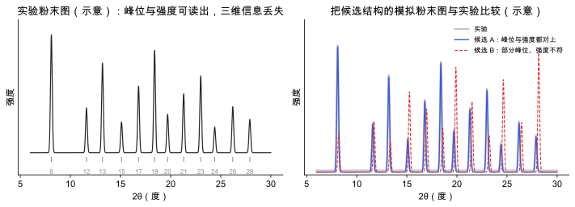

粉末衍射引导的晶体结构解析与预测
分子晶体常常长不出单晶，只能拿到粉末图。把粉末图当作搜索的目标函数，可以在候选结构与实验之间架一座桥，也给 CSP 的排序提供能量以外的独立证据。
直观阅读需要
- 晶体结构预测：搜索与排序：搜索与排序两个问题
- Bragg 定律与晶面间距
完整推导还需要
- 倒空间、布里渊区与 k 点采样：倒空间与指标的几何
- 晶体对称性与空间群：空间群与消光规律
只是提示，不需要先读完才能往下看。
直觉直观解释
单晶衍射给出三维倒空间的一整套反射强度，结构解析几乎是“直接读数”。粉末衍射 (powder X-ray diffraction, PXRD) 把所有晶粒的反射压到一条一维强度曲线上：每个反射的强度按取向平均，不同 hkl 的峰还可能重叠。于是结构信息以“峰位 + 强度包”的形式出现，解析变成在参数空间里搜索：调整晶胞、分子位置、取向和构象，让模拟粉末图与实验最吻合。
这和 晶体结构预测：搜索与排序 的结构一样，也是搜索加排序，只是目标函数换成了图谱吻合度。它的价值在于：对分子晶体，实验拿到的往往只有粉末数据；而且图谱吻合是独立于能量模型的证据，可以帮 CSP 在多个低能候选之间做判断。

| 符号 | 是什么 | 图里对应 |
|---|---|---|
| 2\theta | 散射角 | 横轴 |
| 峰位 | 由晶面间距 d_{hkl} 决定的 Bragg 角 | 左图刻度线 |
| 峰强 | 结构因子模方乘多重度、洛伦兹偏振与吸收因子 | 峰的高度 |
| 候选 A/B | 搜索得到的不同结构模型 | 右图蓝实线、红虚线 |
定义与公式数学与推导
峰位：晶胞决定
Bragg 定律给出
其中 d_{hkl} 是晶面间距；\theta 是 Bragg 角；\lambda 是 X 射线波长。对晶格矩阵 A（列向量为 \mathbf a_1,\mathbf a_2,\mathbf a_3），晶面间距由倒易度规给出：
其中 \mathbf h = (h,k,l)^{\mathsf T} 是整数指标。这条式子说明：峰位只依赖晶胞参数和指标，与原子在晶胞里的位置无关。指标化 (indexing) 就是从峰位反推晶胞参数，这是结构解析的第一步。
峰强：原子位置与对称性
运动学近似下，粉末图上第 i 个观测点的计算强度是各反射的峰形函数叠加：
其中 m_{hkl} 是多重度；F_{hkl} = \sum_j f_j(\theta) \exp(2\pi i\, \mathbf h\cdot \mathbf x_j) \exp(-B_j \sin^2\theta/\lambda^2) 是结构因子，f_j 是原子散射因子，\mathbf x_j 是分数坐标，B_j 是温度因子；Lp 是洛伦兹偏振因子；A 是吸收校正；\phi 是峰形函数（常用 pseudo-Voigt）；b_i 是背景。豆知识：X 射线对氢原子几乎“看不见”，f_{\mathrm H} 很小。
结构解析 = 全局优化
把未知参数记为 \mathbf p（晶胞、空间群、分子质心与取向、扭转角），profile 拟合的目标是
其中 w_i 是权重。这个曲面有很多局部极小，常用模拟退火 (simulated annealing) 或蒙特卡洛在参数空间里全局搜索，再用 Rietveld 精修细化 [Coelho 2018]。分子晶体里常把分子当作刚性单元，只搜位置和取向，减少自由度。
在本研究线里的样子对应与边界
- 给 CSP 候选做独立筛选：对实验 PXRD，把每个 CSP 候选转成模拟粉末图，按峰位匹配（指标化层面）和 profile 吻合度排序。与能量排序不一致的候选，往往是能量模型或采样出了问题，值得回头看（见 晶体结构预测：搜索与排序 的能量窗口）。
- 搜索阶段的约束：晶胞参数可以先由 PXRD 指标化固定，把 CSP 的搜索维度压下来；实验 PXRD 引导的序列 CSP 就是这个思路的一个近期例子 chemRxiv 2026-11-19。
- 用机器学习势加速：解析过程中要反复优化分子几何和计算能量，通用机器学习势可以替代部分 DFT 调用 arXiv:2611.23760；晶格参数本身也可以直接从不变量学习 [Hofgard et al. 2026]。
- 手性/空间群判断：粉末图对空间群的区分依赖消光规律和强度，单凭峰位常常不唯一（见 晶体对称性与空间群）。
- 质子位置：X 射线对 H 不敏感，盐与共晶的质子归属要靠中子衍射、固体 NMR 或 DFT 优化（见 质子归属：盐与共晶）。
常见坑对应与边界
- 择优取向 (preferred orientation)：片状或针状晶体会让某些反射异常增强，按强度判断会错。样品制备和 March–Dollase 校正要一起考虑。
- 零点偏移与样品位移：整体峰位漂移会被误读成晶胞变化，指标化前要先校正。
- 峰重叠：低对称、大晶胞的分子晶体在低角度就有大量重叠峰；只用峰强会把重叠峰的面积分错。
- 空间群选错：消光规律可能对应多个空间群，强度拟合要把候选空间群都试一遍。
- 参数过多过拟合：profile 拟合的自由度接近数据点数时，R 因子低不代表结构对；要看参数与数据之比和化学合理性。
- 把动力学效应当静态结构：分子晶体的热运动、无序和调制结构会让峰形和强度偏离静态模型。
检验自己对应与边界
参考资料
论文Harris & Cheung 2004
尚未实际查阅，目前只是拟查阅书目
论文Coelho 2018
尚未实际查阅，目前只是拟查阅书目
论文Hofgard et al. 2026
尚未实际查阅，目前只是拟查阅书目
分类统计力学与采样 · 方法 · 研究线：结构预测与能量景观 · 状态：草稿